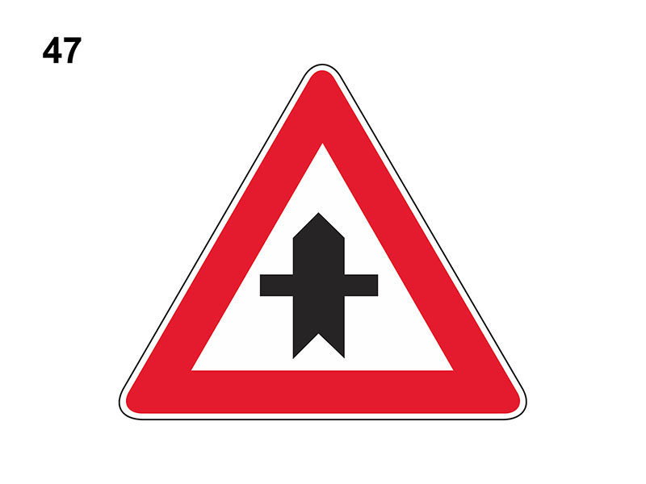

Intersezione con diritto di precedenza

E' un segnale di prescrizione (precedenza).
Preannuncia un incrocio (di norma a 150 metri) in cui si ha la precedenza sui veicoli provenienti dalle strade secondarie da destra e sinistra (tali strade sono ovviamente senza diritto di precedenza).
Perde la sua efficacia in presenza di agente che regola il traffico.
Può essere preceduto dal segnale 'DIRITTO DI PRECEDENZA'.
Impone comunque di rallentare, accertandosi che i veicoli incrocianti (da destra e da sinistra) siano disposti a dare la precedenza.
Non è vero che è posto su autostrade poiché non ci possono essere incroci a raso.
Preannuncia un incrocio (di norma a 150 metri) in cui si ha la precedenza sui veicoli provenienti dalle strade secondarie da destra e sinistra (tali strade sono ovviamente senza diritto di precedenza).
Perde la sua efficacia in presenza di agente che regola il traffico.
Può essere preceduto dal segnale 'DIRITTO DI PRECEDENZA'.
Impone comunque di rallentare, accertandosi che i veicoli incrocianti (da destra e da sinistra) siano disposti a dare la precedenza.
Non è vero che è posto su autostrade poiché non ci possono essere incroci a raso.